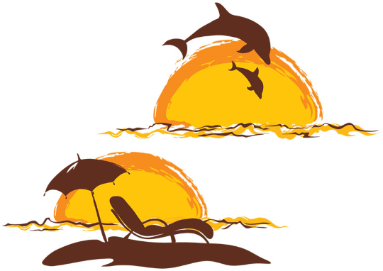
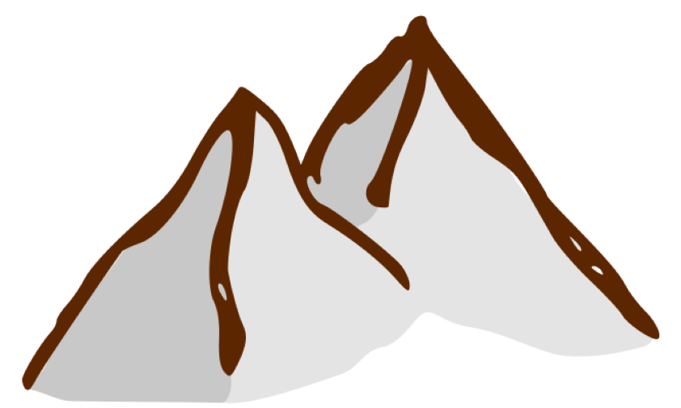

La Girafa es deia Amèlia, tenia el coll molt, molt llarg, li agradava menjar les fulles més altes dels arbres i sortir a passejar els dies que feia molt sol. Un dia d’estiu va decidir sortir d’excursió a: